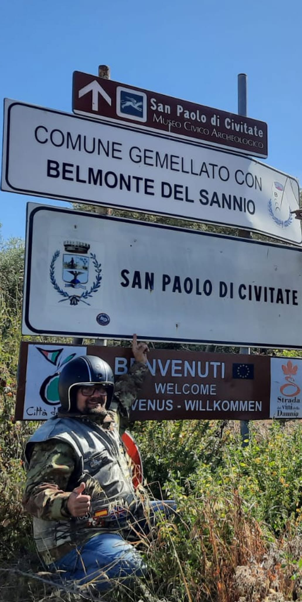
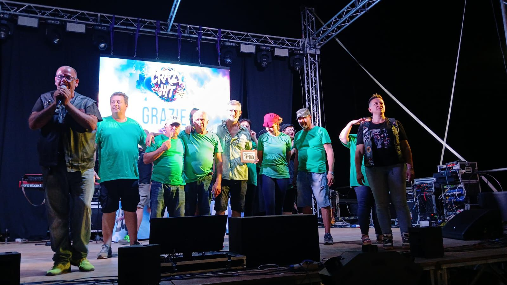
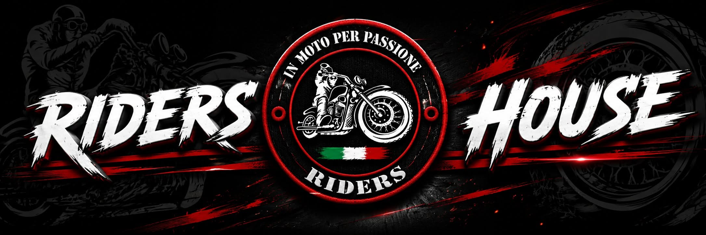
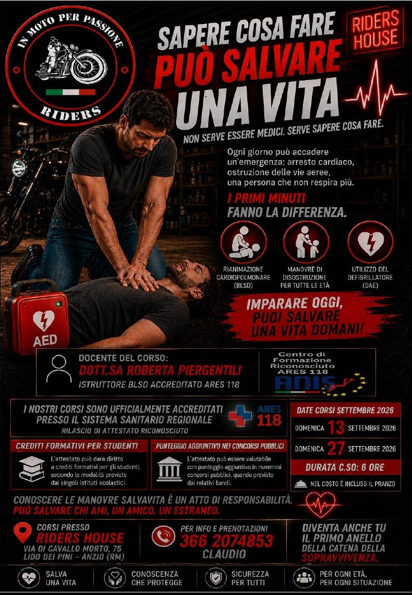

Benvenuti nel sito ufficiale.
ASD In Moto per Passione nasce per condividere la passione delle due ruote.



Viaggi e uscite aperti a tutti i motociclisti, qualunque sia la moto.
Condividiamo la passione per le due ruote con rispetto, divertimento e spirito di gruppo.
Raduni, incontri, iniziative benefiche e tanti momenti da vivere insieme.
Il nostro punto di ritrovo dove ogni biker è il benvenuto.

Domenica 13 e Domenica 27 Settembre 2026
Corso della durata di 6 ore. Nel costo è incluso il pranzo.
Uscite domenicali e viaggi aperti a tutti i motociclisti.
Serate in compagnia, aperitivi e incontri tra amici.
La Riders House è il punto di ritrovo della ASD In Moto per Passione, dove soci, amici e motociclisti possono incontrarsi, organizzare uscite, partecipare alle serate e vivere il motoclub durante tutto l'anno.
Via di Cavallo Morto 75
Lido dei Pini - Anzio (RM)
Spegni ogni pensiero... accendi il motore.